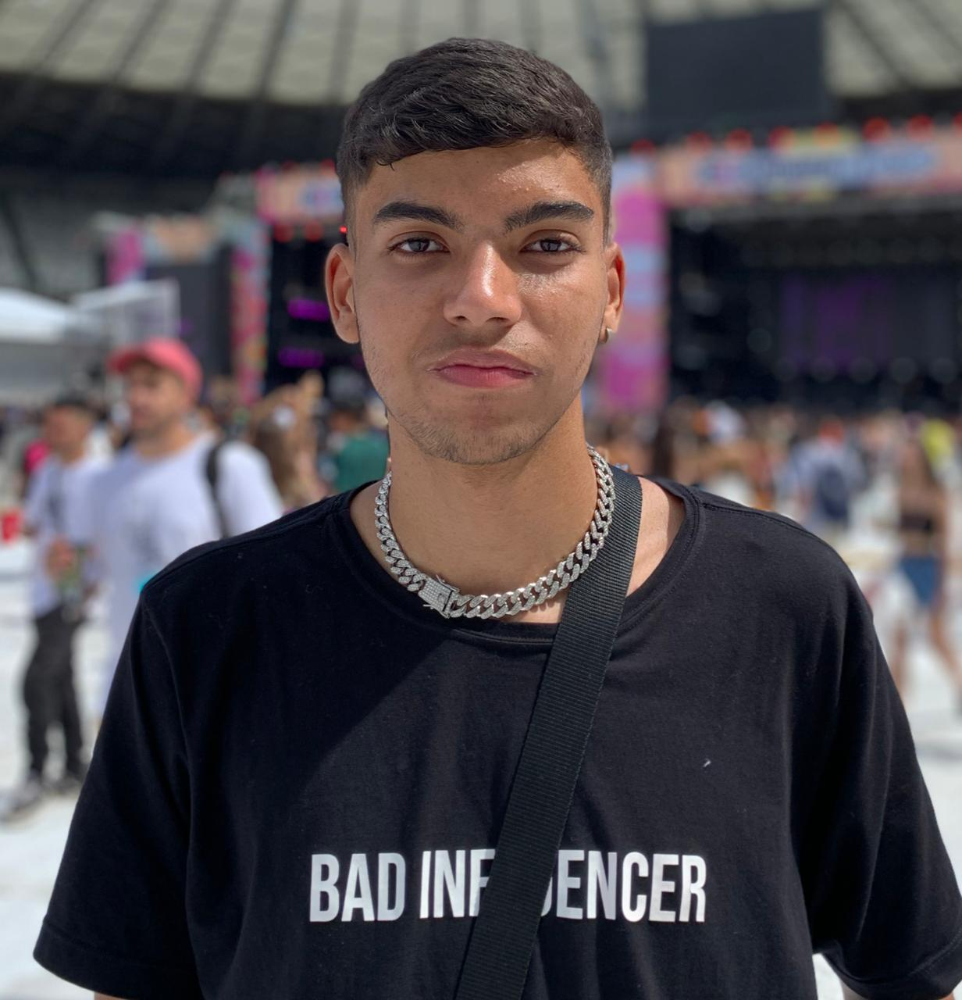
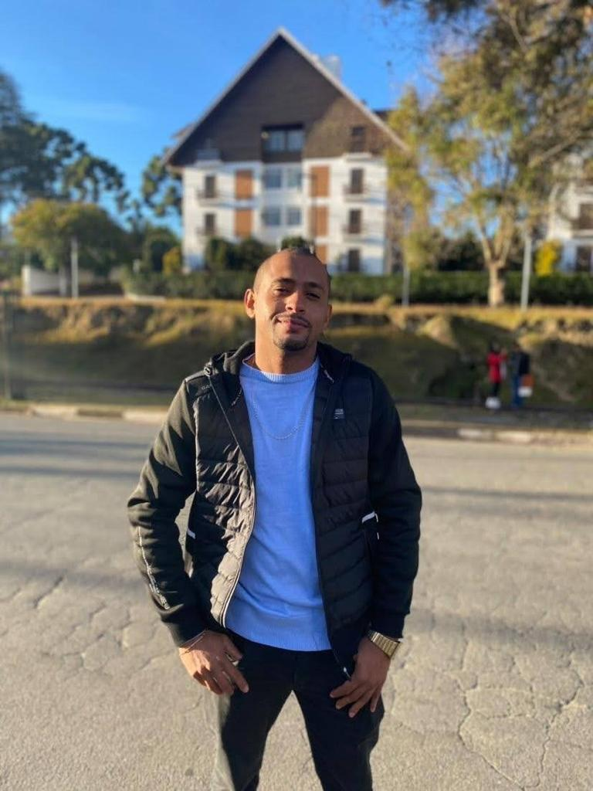
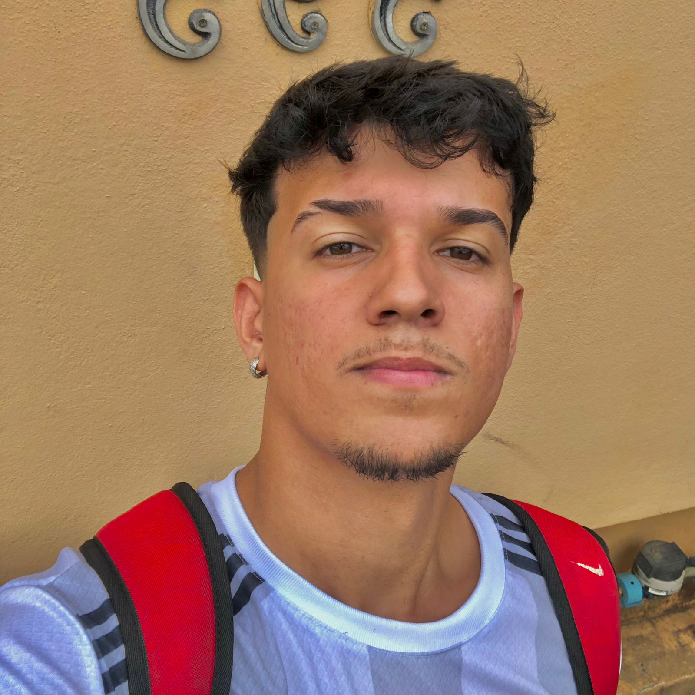

Lucas Teixeira

Meu nome é Lucas Teixeira Santos, tenho 18 anos e sou
natural de Itapecerica/MG. Optei por estudar programação
devido ao meu interesse em toda a área de Tecnologia da
Informação (TI). Decidi me especializar em front-end
porque adoro criar projetos de design gráfico e outras
atividades relacionadas.
Estou empenhado em dedicar o meu máximo esforço nessa
fase de aprendizado, visando ingressar no mercado de
trabalho em um futuro próximo e ter a oportunidade de
desenvolver projetos inovadores e únicos.
João Júnior

Meu Nome é João Casturino Gonçalves de Lima Júnior, sou formado em
técnico de mecânica, tenho 35 anos, atualmente estou buscando expandir minhas habilidades e conhecimentos por meio de um curso de
desenvolvedor de sistemas na Proz Educação, buscando sempre a excelência em minhas atividades e tarefas. Como técnico em mecânica, tenho uma vasta experiência em solucionar
problemas mecânicos e garantir que máquinas e equipamentos sempre funcionem em sua capacidade máxima. Sou capaz de analisar rapidamente os desafios apresentados e encontrar soluções eficazes
para garantir a produtividade e a eficiência dos sistemas mecânicos.
Mateus Bandeira

Meu nome é Mateus Henrique Andrade Bandeira e tenho
21 anos. Atualmente trabalho como Auxiliar de
Analista em sistemas Júnior, sou muito focado no meu
trabalho e vida pessoal. Estou cursando a área de
desenvolvimento de sistemas e até então me
identifiquei mais com a programação Front end, estou
me esforçando ao máximo para me destacar nessa área
e futuramente me garantir na profissão. Sempre fui
apaixonado na área de computação e como a maioria
dos Devs gosto muito de games.